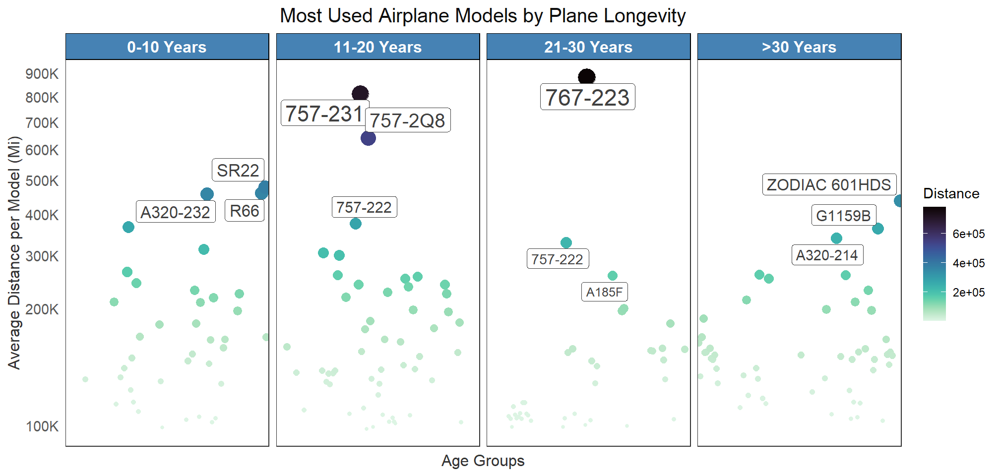
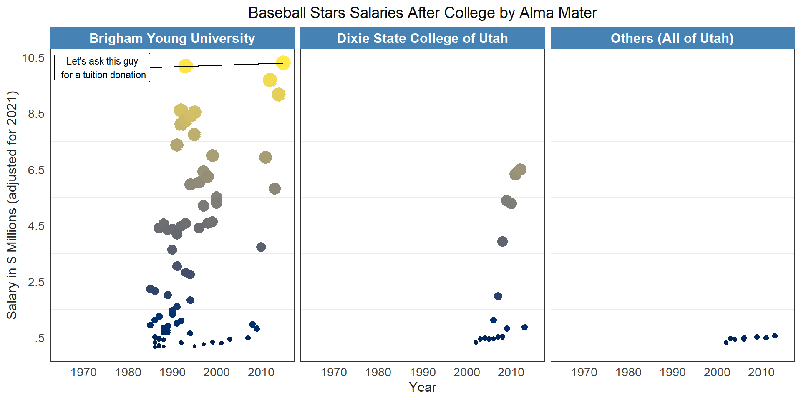

This section of my portfolio contains Dot Plots I’ve created throughout the years. Take a look at them!
library(tidyverse)
library(nycflights13)
library(ggridges)
library(viridis)
library(ggrepel)
planes1 <- planes %>%
select(-c(speed,engine))
flights1 <- flights %>%
select(-c(month, day, time_hour))
good1 <- flights1 %>%
right_join(planes1, by = "tailnum") %>%
right_join(airlines, by = "carrier") %>%
mutate("age"=year.x-year.y) %>%
mutate("ages" = case_when(
age <= 10 ~ "0-10",
age <= 20 ~ "11-20",
age <= 30 ~ "21-30",
TRUE ~ ">30"
)) %>%
mutate(ages = factor(ages, levels = c("0-10", "11-20", "21-30", ">30"))) %>%
select(carrier, name, age, ages, distance, dep_delay, tailnum, model)
goodm <- good1 %>%
group_by(ages,carrier) %>%
summarise(mdlay = mean(dep_delay))
good <- good1 %>%
group_by(tailnum) %>%
summarise(
distance= sum(distance)) %>%
right_join(good1, by = "tailnum") %>%
select(-distance.y) %>%
rename(distance = distance.x) %>%
group_by( tailnum, carrier, ages, distance, model) %>%
summarise() %>%
group_by(model, ages) %>%
summarise(distance=mean(distance))
top1s <- good %>%
group_by(ages) %>%
top_n(3, distance) %>%
arrange(ages, -distance)
custom_labels <- c("0-10 Years", "11-20 Years", "21-30 Years", ">30 Years")
custom_labeller <- function(variable, value) {
return(custom_labels[value])
}
ggplot(good, aes(model, distance, col=distance, size=distance)) +
geom_point(show.legend = c(color=T,size=F))+
facet_wrap(vars(ages), nrow = 1, labeller = labeller(ages = custom_labeller))+
scale_color_viridis(option = "G", direction = -1)+
scale_y_continuous(trans="sqrt", breaks = seq(1000,1000000, by=100000), labels = c("100K", "200K", "300K", "400K", "500K", "600K", "700K", "800K", "900K", "1M"))+
geom_label_repel(data = top1s, aes(label = model), color="grey25", show.legend = F)+
theme_bw()+
labs(
y="Average Distance per Model (Mi)",
x="Age Groups",
title = "Most Used Airplane Models by Plane Longevity",
color="Distance"
)+
theme(
axis.text.y = element_text(color="grey35", size=11),
axis.text.x = element_blank(),
axis.title = element_text(color="grey20", size=12),
axis.ticks = element_blank(),
plot.title = element_text(size=15, color="grey5", hjust=.5),
panel.grid.major = element_blank(),
panel.grid.minor = element_blank(),
strip.text = element_text(size = 12, angle = 0, colour = "white", face="bold"),
strip.background = element_rect(colour = "black", fill = "steelblue")
)
As you can see disregarding carrier, there are always some models that are used more per decade in the industry. Specially the 700 models have been very popular for a while
library(tidyverse)
library(Lahman)
library(ggrepel)
library(MASS)
library(priceR)
library(viridis)
# Redirect all output to a temporary file
sink(tempfile())
# Run the data processing and plotting inside invisible(capture.output())
invisible(capture.output({
# Combine all data and adjust for inflation
pl.info <- People %>%
inner_join(CollegePlaying, by = "playerID") %>%
inner_join(Schools, by = "schoolID") %>%
filter(state == "UT") %>%
dplyr::select(playerID, birthYear, nameGiven, weight, height, name_full) %>%
inner_join(Salaries, by = "playerID") %>%
rename("year" = yearID) %>%
mutate(group = case_when(
year <= 2000 ~ 0,
year > 2000 & year <= max(year) ~ 1
)) %>%
mutate(inflation = adjust_for_inflation(
price = salary, from_date = year,
country = "US",
to_date = 2021))
# Subset of players
pl2 <- pl.info %>%
filter(group == 1)
# Calculate median salaries
median_salaries <- pl.info %>%
group_by(name_full) %>%
summarise(median_salary = median(salary)) %>%
arrange(desc(median_salary))
# Set factor levels based on median salaries
pl.info$name_full <- factor(pl.info$name_full, levels = median_salaries$name_full)
# Get player with the highest salary
player_highest_salary <- pl.info %>%
filter(inflation == max(inflation)) %>%
dplyr::select(playerID, name_full, inflation, year)
# Filter out data for labeling
label_data <- pl.info %>%
filter(name_full != player_highest_salary$name_full)
# Compute overall median
overallmn <- median(pl.info$salary)
# Group data
gro <- pl.info %>%
group_by(nameGiven, name_full, year, salary, inflation) %>%
summarise()
gro <- gro |>
mutate(name_full = case_when(
name_full == "Brigham Young University" ~ name_full,
name_full == "Dixie State College of Utah" ~ name_full,
TRUE ~ "Others (All of Utah)"))
#custom_labels <- c("0-10 Years", "11-20 Years", "21-30 Years", ">30 Years")
#custom_labeller <- function(variable, value) {
#return(custom_labels[value])
#}
ggplot(gro, aes(year, inflation, col=inflation, size=inflation)) +
geom_point(show.legend = F)+
facet_wrap(vars(name_full), nrow = 1)+
#, labeller = labeller(ages = custom_labeller))+
scale_color_viridis(option = "cividis", direction = 1)+
scale_y_continuous( breaks = seq(500000,10500000, by=2000000), labels = c(".5", "2.5", "4.5", "6.5", "8.5","10.5"))+
geom_label_repel(data = player_highest_salary, aes(label = "Let's ask this guy\n for a tuition donation"), direction = "x", nudge_x = -50,size=3, col="black", fill="white")+
theme_bw()+
labs(
y="Salary in $ Millions (adjusted for 2021)",
x="Year",
title = "Baseball Stars Salaries After College by Alma Mater"
)+
theme(
axis.text.y = element_text(color="grey25",size=10.5),
axis.text.x = element_text(color="grey25", size=10.5),
axis.title = element_text(color="grey15", size=12),
axis.ticks = element_blank(),
plot.title = element_text(size=14, color="grey5", hjust = .5),
panel.grid.major = element_blank(),
panel.grid.minor.x = element_blank(),
strip.text = element_text(size = 12, face="bold", angle = 0, colour = "white"),
strip.background = element_rect(colour = "steelblue", fill = "steelblue"))
}))
Similarly to the distribution plot on this same data in my other tabs; Given that here are only very few players per university we wouldn’t be able to say if the school in which they studied really had a big impact in their salary. Some of those schools are probably not competitive in baseball, so it would make sense that they don’t have high ranking players.
However if we only focus on Dixie and BYU (both schools having a large sample size) then we see that their salaries more evenly distributed if we consider Dixie having a lot less baseball stars.
The only assumption I would take here based on these graphs, is that Dixie and BYU are big baseball competitors and have had great baseball players throughout the years. Their baseball program should be good. It would be cool to compare the best colleges in baseball to see their distributions across country or world.